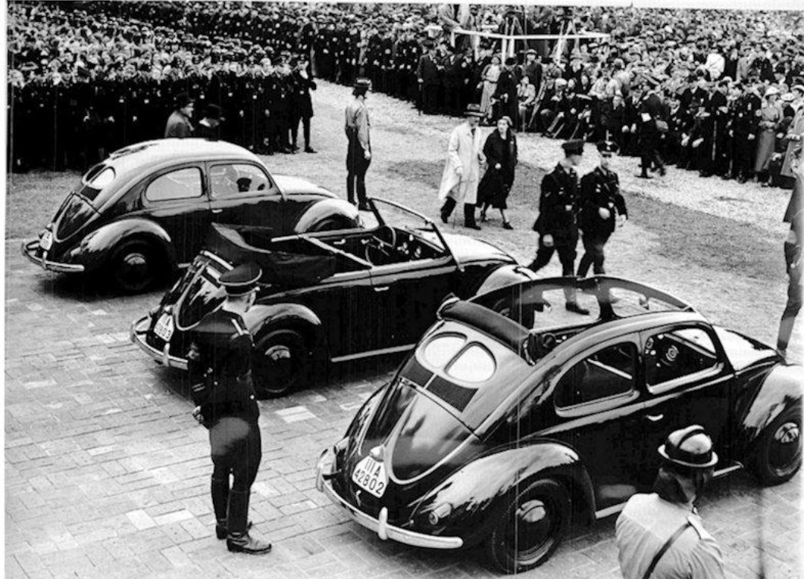
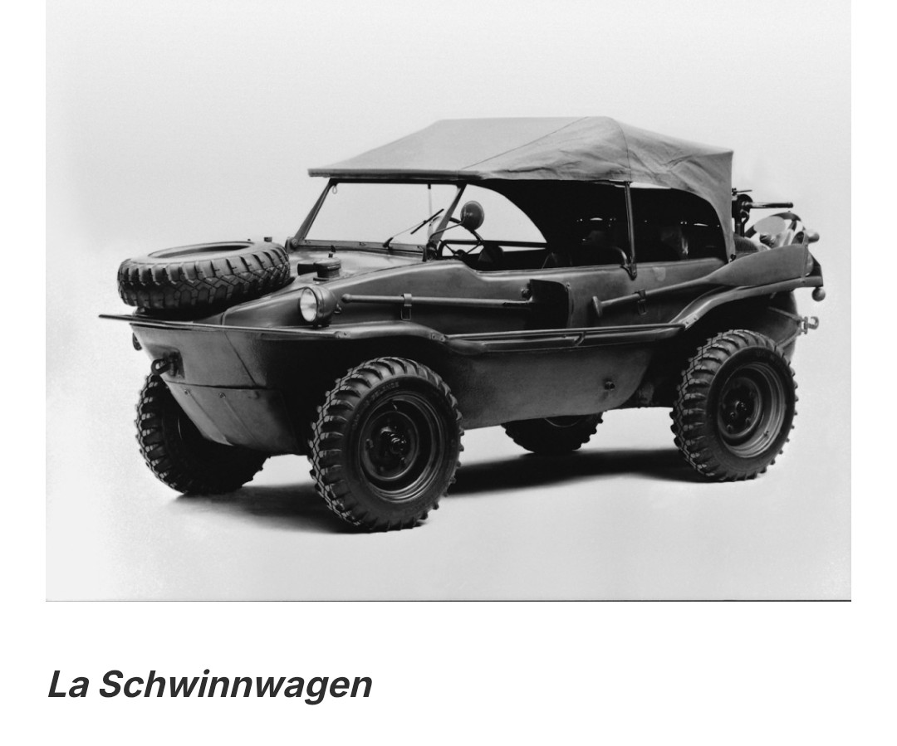

Cette fiche retrace l’histoire de Volkswagen entre 1933 et 1945 : la création de la « voiture du peuple », son usage dans la propagande, la construction de l’usine de Wolfsburg, le recours au travail forcé, la production de véhicules militaires et la renaissance de la marque après la guerre. Chaque étape est illustrée par des documents et des photographies issus du dossier Volkswagen du musée HOP WW2.
Entre 1933 et 1937, le programme Kraft durch Freude (KdF) lance l’idée d’une « voiture du peuple ». Les affiches et documents de propagande présentent une Allemagne moderne, capable d’offrir une automobile accessible aux travailleurs. Les livrets d’épargne KdF permettent aux ouvriers de financer progressivement leur future voiture. En 1937, le logo officiel de Volkswagen apparaît : la marque naît dans un cadre entièrement contrôlé par la Deutsche Arbeitsfront.


Hitler confie à Ferdinand Porsche la conception d’une voiture simple, robuste et économique. Les premiers prototypes de la KdF-Wagen sont testés entre 1936 et 1938. Les présentations officielles, souvent en présence de Hitler, mettent en scène la modernité technique du projet. Les essais devant les officiers montrent une voiture pensée pour la production de masse, mais encore loin d’une fabrication civile réelle.



La future Volkswagen devient un instrument de propagande. Les prototypes sont présentés lors de cérémonies publiques, devant des foules rassemblées. Le régime promet une voiture pour chaque foyer, alors qu’aucun modèle civil ne sera livré avant la guerre. Les inspections officielles, comme celles de 1938, servent à associer la KdF-Wagen à l’image d’une Allemagne organisée, moderne et techniquement avancée.

En 1938, l’usine de Wolfsburg est construite pour produire la voiture du peuple. Le site devient l’un des plus grands complexes industriels d’Europe, avec des chaînes de montage pensées pour une production massive.
Pendant la guerre, Wolfsburg ne produit plus de voitures civiles. L’usine fonctionne grâce à une main‑d’œuvre composée en grande partie de travailleurs forcés : des prisonniers de guerre, des déportés et des civils étrangers réquisitionnés. Le travail est imposé, sous surveillance, dans des conditions difficiles : cadence élevée, fatigue, logement précaire et alimentation insuffisante. Cette réalité fait partie intégrante de l’histoire de Volkswagen pendant le conflit.



Avec la guerre, la mécanique Volkswagen est utilisée pour des véhicules militaires légers. Le Kübelwagen devient le véhicule standard de la Wehrmacht : simple, léger, facile à entretenir. Le Schwimmwagen, amphibie, est employé pour la reconnaissance et les liaisons. D’autres variantes, comme les véhicules de commandement, montrent comment un projet civil est transformé en outil militaire adapté à différents fronts.


Après 1945, l’usine de Wolfsburg est reprise par les Britanniques. Sous l’impulsion d’Ivan Hirst, la production reprend avec la Volkswagen Type 1, future Coccinelle. Les chaînes de montage redémarrent dans un paysage de ruines, mais la demande pour des véhicules simples et fiables est forte. La 1000e voiture produite en 1946 symbolise la renaissance de la marque. Dans les années 1950, la Coccinelle devient un succès mondial, détaché de son origine propagandiste, mais marquée par une histoire liée à la guerre, au travail forcé et à la reconstruction.